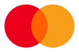
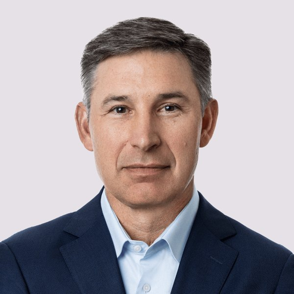

LAB ─ SOFI概要 ─ 01/34
SOFISOFI ─ FRONTIER LAB 企業資料
学生ローンから「金融のなんでもアプリ」へ
個人向けの金融アプリと企業向けの技術基盤を持つ会社。学生ローンの借り換え1本から始まった会社が10年足らずで8本の柱を持つ金融の会社に変わっています。
売上（GAAP純収益、2026年7〜9月期）
13億8,510万ドル（約2兆1,330億円）
前年同期比44%増（前年同期9億6,160万ドル）
四半期の売上が初めて13億ドルを超えました。伸びの中心は貸し出し部門で、売上全体の増分の大半を個人ローンの組成増が作っています。
2026年7〜9月期／SoFi 2026年第3四半期決算発表（SEC 8-K Exhibit 99.1、2026年10月27日）
会員数（2026年9月末）
1,707万人
前年同期比35%増、この四半期だけで120万人増
会員は増え続けています。1人あたりの商品数は1.56にとどまります。会員数の伸びがそのまま収益の伸びになる構造にはまだなっていません。
2026年7〜9月期（期末時点）／SoFi 2026年第3四半期決算発表（SEC 8-K Exhibit 99.1、2026年10月27日）
純金利収益（2026年7〜9月期）
9億2,950万ドル（約1兆4,314億円）
前年同期比59%増、純利ざや6.14%（前期比0.16ポイント上昇）
売上の3分の2近くを利息が占めます。預金513億ドルで貸し出しをまかない、預金の調達コストが倉庫型の借入より145ベーシスポイント低い点が利ざや6.14%を支えています。
2026年7〜9月期／SoFi 2026年第3四半期決算発表（SEC 8-K Exhibit 99.1、2026年10月27日）
手数料型の収益（2026年7〜9月期）
5億7,060万ドル（約8,787億円）
調整後純収益13億7,112万ドルの42%（2026年4〜6月期は39%）
会社が長期目標に置く「手数料型が売上の50%」まで残り8ポイントです。42%の内訳はローン組成手数料、他社向け技術基盤、カード決済、証券手数料で、金利に左右されない収益の厚みを測る数字です。
2026年7〜9月期／SoFi 2026年第3四半期決算発表（SEC 8-K Exhibit 99.1、2026年10月27日）
全文を無料公開中 ─ 全34スライドを掲載しています
出典：KPIの出典は各指標の下に記載。数字は各社の決算資料による
LAB ─ SOFI目次 ─ 02/34
CONTENTS
この資料の地図 章の見出しだけを追えば、この会社の今の姿が分かります。
01 概要 論点と事業の形、直近の四半期
02 成長の変遷 売上の推移と会社の沿革
03 テーマ詳解 8つのテーマを1枚ずつ読む
04 エコシステム 提携と買収の相手
05 CEOと製品 経営者の軸と製品の一覧
06 競合比較 弱点と次の決算で見る数字
07 動画・用語 柏原の解説動画と基本の言葉
LAB ─ SOFI概要 ─ 03/34
FOCUS
今の論点は3つ 判定は次の決算で行う。
1
会員1,707万人が1人あたりの商品数に変わるか
会員は前年比35%増の1,707万人、商品数は2,320万件まで広がった。会員が増えるだけか、1人が使う商品が増えて収益の質が上がるかを見る。
手数料型の収益の比率（前回42%）と、1人あたりの商品数
2
縮む技術基盤の事業は反転するか
GalileoとTechnisysを持つ技術基盤の口座数は1億4,000万で、前年比11%減。銀行本体の伸びと、B2Bの基盤事業の縮小が同時に起きている。
技術基盤の口座数と、外部の金融機関への販売
3
貸し倒れが利ざやを食わないか
個人ローンの貸し倒れ率は2.26%。売却分を除くと約3.4%で、預金513億ドルを集めて貸す構造の裏側にある数字。
貸し倒れ率と純金利収益（前回9億2,950万ドル、59%増）
LAB ─ SOFI概要 ─ 04/34
MAP
SoFiの8つのテーマ 8つのテーマで全体像を組み立てる。
01 学生ローンから「金融のなんでもアプリ」へ 36億1,335万ドル（約5,565億円、前年比35%増）
02 金融の用事を1か所で済ませたい会員 1,707万人（前年比35%増）
03 貸す・預かる・つなぐの3事業 2,320万（前年比44%増）
04 利息が6割、手数料が4割 9億2,950万ドル（約1,431億円、前年比59%増）
05 銀行の免許を持つフィンテック 1億4,000万（前年比11%減）
06 安い預金が利ざやと価格を支える 513億ドル（約7兆9,002億円）
07 貸し倒れと、縮む技術基盤の事業 2.26%（売却を除くと約3.4%）
08 手数料の比率、利ざや、1人あたりの商品数 調整後純収益の42%（4〜6月期は39%）
LAB ─ SOFI概要 ─ 05/34
MODEL
お金の流れと、製品 利息収入、決済・仲介等の手数料、融資関連サービス、企業向け技術基盤。
Lending：融資
Financial Services：個人向け金融等
Technology Platform：企業向け技術基盤
LAB ─ SOFI概要 ─ 06/34
LATEST QUARTER
直近の四半期 ─ 統一した物差しで見る SoFiの稼ぎは預金で集めたお金を貸して得る利息と、ローンの組成・決済・証券などの手数料の2本です。
売上（GAAP純収益、2026年7〜9月期）
13億8,510万ドル（約2兆1,330億円）
前年同期比44%増（前年同期9億6,160万ドル） ─ 四半期の売上が初めて13億ドルを超えました。伸びの中心は貸し出し部門で、売上全体の増分の大半を個人ローンの組成増が作っています。
会員数（2026年9月末）
1,707万人
前年同期比35%増、この四半期だけで120万人増 ─ 会員は増え続けています。1人あたりの商品数は1.56にとどまります。会員数の伸びがそのまま収益の伸びになる構造にはまだなっていません。
純金利収益（2026年7〜9月期）
9億2,950万ドル（約1兆4,314億円）
前年同期比59%増、純利ざや6.14%（前期比0.16ポイント上昇） ─ 売上の3分の2近くを利息が占めます。預金513億ドルで貸し出しをまかない、預金の調達コストが倉庫型の借入より145ベーシスポイント低い点が利ざや6.14%を支えています。
手数料型の収益（2026年7〜9月期）
5億7,060万ドル（約8,787億円）
調整後純収益13億7,112万ドルの42%（2026年4〜6月期は39%） ─ 会社が長期目標に置く「手数料型が売上の50%」まで残り8ポイントです。42%の内訳はローン組成手数料、他社向け技術基盤、カード決済、証券手数料で、金利に左右されない収益の厚みを測る数字です。
四半期の要点 ─ 2026年7〜9月期の純金利収益は9億2,950万ドル（約1,431億円、前年比59%増）、会計上の非金利収益は4億5,560万ドル（約702億円）で、合わせた売上（GAAPの純収益）は13億8,510万ドル（約2,133億円）でした。会社が独自に集計する手数料型の収益（ローンの組成・紹介、他社向けの技術基盤、カード決済、証券の手数料）は5億7,060万ドル（約879億円）で、調整後純収益13億7,100万ドル（約2,111億円）の42%にあたります。手数料型の収益は会計上の非金利収益と集計の範囲が違うため、純金利収益と足しても売上とは一致しません。調整後EBITDAは4億6,980万ドル（約723億円）で、利益率は34%です。
出典：2026年7〜9月期、SoFi 2026年第3四半期 決算発表（SEC 8-K、2026年10月27日）より。
LAB ─ SOFI成長の変遷 ─ 07/34
REVENUE
売上は2018年から2025年で13.4倍 直近の年度は36.1億ドル、前年比+35%。
13.4億ドル 26.7億ドル 40.5億ドル 2018 2019 2020 2021 2022 2023 2024 2025 2.69億ドル 36.1億ドル 2020年 ─ 転換点
Galileoを12億ドルで買収し、決済処理と口座開設のAPIを他社へ売る技術基盤の事業を持ちました。自社の会員向けアプリだけの会社から、他社の金融サービスの裏側を担う会社へ広がった転換点です。現在の技術基盤の口座数1億4,044万件の土台はこの買収にあります。
2022年2月 ─ 転換点
Golden Pacific Bancorpの買収を通じて銀行持株会社になり、SoFi Bankとして営業を始めました。預金を自ら集められるようになり、資金調達が外部の倉庫型借入から預金へ切り替わりました。2026年9月末の預金は513億ドルで負債の平均の9割を占め、預金の調達コストが倉庫型借入より145ベーシスポイント低い点が純利ざや6.14%の源泉になっています。
2022年3月 ─ 転換点
Technisysを約11億ドル（SoFi株式約8,400万株）で買収し、クラウド型の勘定系システムを持ちました。Galileoの決済・発行処理と組み合わせたSoFi Tech Solutionsとして、口座管理から決済までを1社で他行へ提供する形ができました。ただし2026年7〜9月期の技術基盤の売上は8,736万8,000ドルで前年同期比24%減と、買収の収益化は道半ばです。
出典：12月31日決算。GAAP total net revenue（調整後純収益とは異なる）。2025年度（2025年1〜12月）まで。
LAB ─ SOFI成長の変遷 ─ 08/34
REVENUE DETAIL
年度ごとの売上と伸び グラフと同じ数字を年度ごとに前年比つきで並べます。
出典：12月31日決算。GAAP total net revenue（調整後純収益とは異なる）。2025年度（2025年1〜12月）まで。
LAB ─ SOFI成長の変遷 ─ 09/34
HISTORY
いまの形ができた転機 創業から直近までの転機を一次情報の発表日で並べます。
2011
学生ローンから創業
卒業生の資金を在校生の学費ローンにつなぐ仕組みから始まりました。
2020
Galileoを買収
5月14日に全株式を取得し、決済と金融APIを他社に提供する技術基盤の事業を持ちました。
2022
銀行として営業を開始
2月の銀行の合併で銀行持株会社になり、SoFi Bankとして営業を始めました。
2022
Technisysを買収
3月3日に買収を終え、クラウド型の勘定系システムをGalileoの技術と組み合わせました。
出典：各社の公式発表・年次報告書による
LAB ─ SOFI成長の変遷 ─ 10/34
NUMBERS
いまの数字 各テーマの先頭の数字を並べた。
2025年度の売上 ─ 学生ローンから「金融のなんでもアプリ」へ
36億1,335万ドル（約5,565億円、前年比35%増）
会員 ─ 金融の用事を1か所で済ませたい会員
1,707万人（前年比35%増）
金融サービスの商品 ─ 貸す・預かる・つなぐの3事業
2,320万（前年比44%増）
純金利収益 ─ 利息が6割、手数料が4割
9億2,950万ドル（約1,431億円、前年比59%増）
技術基盤の口座数 ─ 銀行の免許を持つフィンテック
1億4,000万（前年比11%減）
預金 ─ 安い預金が利ざやと価格を支える
513億ドル（約7兆9,002億円）
LAB ─ SOFIテーマ詳解 ─ 11/34
THEME 01 / 08
学生ローンから「金融のなんでもアプリ」へ SoFiはローン・預金・投資・カードをひとつのアプリで提供する、銀行の免許を持つフィンテック企業です。
2025年度の売上
36億1,335万ドル（約5,565億円、前年比35%増）
2026年7〜9月期の純利益
2億4,100万ドル（約371億円）
年換算売上1億ドルを超える事業
8事業（2026年7〜9月期決算発表のCEOコメント）
読み方 ─ 学生ローンの借り換え1本から始まった会社が10年足らずで8本の柱を持つ金融の会社に変わっています。
出典：2025年度はSoFi 年次報告書10-K（2025年度、2026年2月17日提出）、2026年7〜9月期の数字と事業数はSoFi 2026年第3四半期決算発表（SEC 8-K Exhibit 99.1、2026年10月27日）より。
LAB ─ SOFIテーマ詳解 ─ 12/34
THEME 02 / 08
金融の用事を1か所で済ませたい会員 SoFiの会員の課題はローン・預金・投資がばらばらの金融機関に分かれていることです。
読み方 ─ 会員1,707万人が持つ商品は1人あたり1.56件にとどまります。会員数の伸び35%がそのまま収益の伸びになる構造にはまだなっておらず、既存会員が開いた新規商品の割合51%をどこまで上げられるかが収益化の分かれ目です。
出典：2026年7〜9月期、SoFi 2026年第3四半期 決算発表（SEC 8-K、2026年10月27日）より。
LAB ─ SOFIテーマ詳解 ─ 13/34
THEME 03 / 08
貸す・預かる・つなぐの3事業 SoFiの事業はローンの貸し出し、預金や投資の金融サービス、他社向けの技術基盤の3つです。
商品の合計
2,667万（前年比44%増、金融サービス2,320万と貸し出し340万の合計。端数の関係で足し算は一致しません）
読み方 ─ 商品数2,667万件には無料の家計管理Relayの872万9,690件も含まれます。件数の伸び44%を収益の伸びと同列には読めず、課金につながる商品がどれだけ増えたかを分けて見る必要があります。
出典：2026年9月末、SoFi 2026年第3四半期 決算発表（SEC 8-K、2026年10月27日）より。
LAB ─ SOFIテーマ詳解 ─ 14/34
THEME 04 / 08
利息が6割、手数料が4割 SoFiの稼ぎは預金で集めたお金を貸して得る利息と、ローンの組成・決済・証券などの手数料の2本です。
純金利収益
9億2,950万ドル（約1,431億円、前年比59%増）
手数料型の収益
5億7,060万ドル（約879億円、調整後純収益の42%）
調整後EBITDA
4億6,980万ドル（約723億円、利益率34%）
読み方 ─ 2026年7〜9月期の純金利収益は9億2,950万ドル（約1,431億円、前年比59%増）、会計上の非金利収益は4億5,560万ドル（約702億円）で、合わせた売上（GAAPの純収益）は13億8,510万ドル（約2,133億円）でした。会社が独自に集計する手数料型の収益（ローンの組成・紹介、他社向けの技術基盤、カード決済、証券の手数料）は5億7,060万ドル（約879億円）で、調整後純収益13億7,100万ドル（約2,111億円）の42%にあたります。手数料型の収益は会計上の非金利収益と集計の範囲が違うため、純金利収益と足しても売上とは一致しません。調整後EBITDAは4億6,980万ドル（約723億円）で、利益率は34%です。
出典：2026年7〜9月期、SoFi 2026年第3四半期 決算発表（SEC 8-K、2026年10月27日）より。
LAB ─ SOFIテーマ詳解 ─ 15/34
THEME 05 / 08
銀行の免許を持つフィンテック SoFiの業界での立ち位置はアプリの使いやすさで競うフィンテックと、預金を持つ銀行の両方の顔を持つことです。
技術基盤の口座数
1億4,000万（前年比11%減）
SoFiUSDの年間決済額の見通し
250億ドル超（2026年9月22日からMastercardのネットワークで自社カード取引の決済に使用）
読み方 ─ 技術基盤の口座数は前年比11%減りました。SoFiUSDの年間決済額は250億ドルを超える見通しです。他社の裏側を担う事業が縮む一方で、自社の銀行が発行するトークンで決済まで自前で持つ動きが新しい受け皿になっています。
出典：2026年7〜9月期、SoFi 2026年第3四半期決算発表（SEC 8-K、2026年10月27日）より。SoFiUSDはSoFiの発行開始発表（2025年12月18日）と同決算発表より。
LAB ─ SOFIテーマ詳解 ─ 16/34
THEME 06 / 08
安い預金が利ざやと価格を支える SoFiが選ばれる理由は預金で安く集めたお金で、会員に条件のよいローンや預金金利を出せることです。
読み方 ─ 預金513億ドルは負債の平均の9割を占め、預金の調達コストは倉庫型借入より145ベーシスポイント低く置かれています。預金の伸びが止まれば調達は割高な借入へ戻り、純利ざや6.14%は圧縮されます。
出典：2026年7〜9月期、SoFi 2026年第3四半期 決算発表（SEC 8-K、2026年10月27日）より。
LAB ─ SOFIテーマ詳解 ─ 17/34
THEME 07 / 08
貸し倒れと、縮む技術基盤の事業 SoFiの注意点はローンの貸し倒れの実勢と、技術基盤の事業の縮小です。
個人ローンの貸し倒れ率
2.26%（売却を除くと約3.4%）
技術基盤の売上
8,740万ドル（約135億円、前年比24%減）
読み方 ─ 売却を含む2.26%と、売却を除く約3.4%の差がどう動くかがローンの質を見る一番の手がかりです。
出典：2026年7〜9月期、SoFi 2026年第3四半期 決算発表（SEC 8-K、2026年10月27日）より。
LAB ─ SOFIテーマ詳解 ─ 18/34
THEME 08 / 08
手数料の比率、利ざや、1人あたりの商品数 SoFiの決算で最初に見るのは手数料収益の比率、純利ざや、1人あたりの商品数の3つです。
手数料型の収益の比率
調整後純収益の42%（4〜6月期は39%）
読み方 ─ 次の決算では手数料型の収益の比率が42%から50%の長期目標へ近づくかを確認します。純利ざや6.14%の維持と1人あたり商品数1.56の伸びも同じ決算で並べて見ます。
出典：2026年7〜9月期、SoFi 2026年第3四半期 決算発表（SEC 8-K、2026年10月27日）より。
LAB ─ SOFIエコシステム ─ 19/34
ECOSYSTEM
つながりの相手 提携と買収の相手から、会社の広がりを読む。
Galileo Galileo買収・技術基盤
決済・口座管理のAPIの仕組み。SoFiは買収契約を発表し、金融アプリを支えるB2B事業へ広げました。日付は買収合意の発表日。
2020-04-07 Technisys Technisys買収完了・技術基盤
クラウド型コアバンキング企業の買収を完了。Galileoと組み合わせ、他の金融機関に基幹システムを提供する構想。
2022-03-03 Fortress融資プラットフォーム提携
Fortress関連ファンドとの契約を拡大。第三者資金を活用するLoan Platform Businessで、融資の組成・紹介と手数料収入をつなぎます。
2025-04-17 出典：各社の発表資料による
LAB ─ SOFIエコシステム ─ 20/34
ECOSYSTEM
つながりの相手（続き） 相手の顔ぶれがこの会社の事業の広がりを決めます。
Edge Focus融資・技術提携
Fortressとの共同事業を通じ、2年間の融資契約を発表。SoFiが借り手を集める力と外部パートナーの資金・技術を組み合わせます。
2025-04-17 
Mastercard決済ネットワーク提携
SoFiUSDをMastercardの決済ネットワークで決済手段にするための提携を発表。発表時点では対応の検討と予定の段階を含みます。
2026-03-03 出典：各社の発表資料による
LAB ─ SOFIエコシステム ─ 21/34
CONNECTIONS
対象6社の中での位置 各社の入口の見出しを並べ、6社が互いの顧客であり競合でもある関係を読みます。
IonQ
イオン方式の量子コンピュータから、通信・センサーまで ─ 詳しくは
IonQの資料 へ
AMD
GPUとCPUの両方を持つ半導体会社 ─ 詳しくは
AMDの資料 へ
出典：FRONTIER LAB 対象6社の資料による
LAB ─ SOFICEOと製品 ─ 22/34

Anthony Noto（アンソニー・ノト）（CEO）
CEO STATEMENT
Anthony Noto
「僕たちの焦点はシンプルです。会員を増やし、会員が使う商品を増やし、商品あたりの収益を増やして、長期で株主に最大の価値を作ることです。10年足らずで、SoFiは単一商品の会社から、年換算売上1億ドルを超える事業を8つ持つ金融の総合アプリに変わりました。」
"Our focus is simple. We are adding more members, who are using more products, and generating more revenue per product to create the most value for our shareholders over the long run. In less than a decade, we have transformed SoFi from a single-product company into an everything financial app with eight different businesses each generating over $100 million in annualized revenue."
2026年10月27日／SoFi 2026年第3四半期決算発表（SEC 8-K Exhibit 99.1、2026年10月27日）のCEOコメント
経営の物差しを会員数・商品数・商品あたり収益の3つに固定する宣言です。裏返すと、この3つが同時に鈍れば成長の説明が成り立たなくなる構造でもあります。
出典：発言は各社の決算説明会・公式発表による
LAB ─ SOFICEOと製品 ─ 23/34
CEO QUOTES
経営者の発言で読む、今の軸 「今日、10年足らずの時点で、2030年末までに商品数1億件へ届く明確な道筋が見えています。現在の4倍です。」
2026年10月27日／SoFi 2026年第3四半期決算説明会の公式書き起こし（SoFi IR、2026年10月27日） ─ 原文：Today, less than a decade later, we see a clear path to achieving 100 million products by the end of 2030 which is a 4x increase from where we stand today.
商品数2,667万件から1億件へは年平均で約39%の伸びが4年続きます。現在の商品の伸び44%がほぼ鈍化しない前提で、1人あたり商品数1.56を大きく上げるか、会員数を5,000万人規模まで増やすかのどちらかが必要です。
「来年末までにSoFi Plus会員100万人を目標にしています。この四半期、SoFi Plusの伸びは僕たちの想定を下回りました。根本的には悪意のある行為者への対応が原因です。」
2026年10月27日／SoFi 2026年第3四半期決算説明会の公式書き起こし、質疑応答（SoFi IR、2026年10月27日） ─ 原文：We are targeting one million SoFi Plus members by the end of next year. In the quarter, in Q3, our SoFi Plus growth was below what we expected. It was fundamentally due to some of the nefarious actors.
有料会員SoFi Plusは9月末で27万2,835件です。100万人まで残り4倍超を1年強で埋める計算で、年120ドルの課金が会員の節約額に見合うかが問われます。不正対策で獲得を絞った経緯も課金モデルの脆さを示しています。
出典：発言は各社の決算説明会・公式発表による
LAB ─ SOFICEOと製品 ─ 24/34
PRODUCT GUIDE
製品の一覧と稼ぎ方 製品ごとに、誰に売り、どう課金するかを見る。
1
Lending：個人ローン
会員と外部顧客に無担保の個人ローンを貸し、金利と組成手数料で稼ぎます。2026年7〜9月期の組成は126億2,214万ドルで過去最高、商品数は259万8,719件、加重平均金利は12.78%です。自社で持つ分と第三者へ渡す分に振り分けます。
2
Lending：学生ローン
在校生と卒業生の借り換えに貸し、金利で稼ぎます。2026年7〜9月期の組成は29億2,207万ドルで前年同期比96%増と過去最高、商品数は75万9,726件、貸し倒れ率は0.63%です。SoFiの創業事業で、卒業生が他の商品へ広がる入口になっています。
3
Lending：住宅ローン
住宅購入と借り換え、ホームエクイティに貸し、金利と売却益で稼ぎます。2026年7〜9月期の組成は13億6,102万ドル、商品数は7万1,609件で、組成の約4割をホームエクイティが占めます。売却した住宅ローンは額面の103.6%で執行されました。
4
Lending：中小企業ローン
2026年7〜9月期に始めた小口の事業者向け融資です。組成は2,705万1,000ドルとまだ小さく、Loan Platform Business経由の組成も始まっています。
5
Loan Platform Business（ローン組成の受託）
第三者の資金でローンを組成し、組成手数料とサービシング料を取る資本を使わない事業です。2026年7〜9月期の組成は約38億ドル、売上は1億5,340万ドルでした。預金を使わずに貸し出し需要を取り込めます。
6
Financial Services：SoFi Money（預金・決済）
SoFi Bankの当座・普通預金です。預金利息との差額とカードのインターチェンジ手数料で稼ぎます。商品数は850万1,822件、預金残高は513億ドル、Moneyとカードを合わせた年間換算の利用額は310億ドルで、インターチェンジ収益は前年同期比77%増えました。
7
Financial Services：Relay（家計管理）
他行口座を束ねて家計と信用スコアを見せる無料の道具で、会員獲得と他商品への送客で稼ぎます。商品数は872万9,690件で金融サービスの中で最多です。直接の課金はなく、貸し出し紹介などの収益につなげます。
8
Financial Services：SoFi Invest（投資）
株式等の自己運用口座とロボアドバイザー、2026年に買収したComposerの自動運用口座を持つ投資サービスです。手数料と金利で稼ぎ、商品数は418万957件、証券手数料収益は前年同期比47%増えました。
9
Financial Services：クレジットカード
SoFiが発行するカードで、インターチェンジ手数料とカード残高の金利で稼ぎます。商品数は65万6,132件で前年同期比67%増えました。個人ローンへの借り換え機能を持つカードも2026年7〜9月期に加わりました。
10
Financial Services：SoFi Crypto（暗号資産）
2025年10〜12月期に再開した暗号資産の売買です。取引手数料で稼ぎ、商品数は50万3,070件です。銀行のアプリ内で暗号資産を扱う形が他行との違いになっています。
11
Financial Services：SoFi Plus（有料会員）
年120ドルの有料会員で、金利の上乗せや投資のマッチングなどの特典を束ねます。加入者は27万2,835人で、加入者の83%が既存会員、25%が加入後に別の商品を追加しました。会社は来年末までに100万人を目標に置きます。
12
Financial Services：At Work（企業向け福利厚生）
雇用主を通じて従業員に学費ローンの補助などを提供し、企業から手数料を取ります。商品数は20万2,554件です。広告に頼らない会員獲得の経路として置かれています。
13
Technology Platform：SoFi Tech Solutions（Galileo／Technisys）
銀行とフィンテックに口座開設・カード発行・決済処理のAPI（Galileo）と勘定系システム（Technisys）を売り、口座数と処理量に応じた利用料を取ります。口座数は1億4,044万864件、2026年7〜9月期の売上は8,736万8,000ドルで前年同期比24%減、部門利益率は16%です。
14
SoFiUSD（ステーブルコイン）
SoFi Bankが発行するドル連動トークンで、現金と現金同等物で1対1に裏付けます。2025年12月18日に発行を始め、2026年9月22日からはMastercardのネットワークで自社カード取引の決済に使い始めました。会社は年間の決済額が250億ドルを超える見通しを示しています。預金ではなく、FDIC保険の対象外です。
出典：製品情報は各社の公式発表・決算資料による
LAB ─ SOFI競合比較 ─ 25/34
RIVALS
競合比較 ─ 規模と、重なる点と違う点 SoFiと正面から重なる相手を、規模・成長率・重なる点・違う点で並べる。
Block（Cash App／Square）
規模 ─ 2026年7〜9月期の売上67億1,940万ドル、粗利32億3,530万ドル。Cash Appの月間利用者は6,000万人、Cash Appの粗利は20億7,000万ドル／成長 ─ 売上は前年同期比9.9%増、粗利は21.6%増、Cash Appの粗利は27.5%増
重なる点 ─ 個人向けの送金・預金・カード・小口融資（Cash App Borrow、Afterpay）で重なります。利用者数はSoFi会員1,707万人の3.5倍です
違う点 ─ Blockの課金対象は加盟店の決済手数料と利用者の取引で、粗利を物差しに経営します。銀行免許はCash Appの預金を提携行に置く形で、自ら預金を集めて貸すSoFiと資金の持ち方が違います
Happen（旧LendingClub）
規模 ─ 2026年7〜9月期の売上2億6,320万ドル、ローン組成33億4,000万ドル、預金115億ドル、純利ざや6.05%／成長 ─ 売上は前年同期比1.1%減（前年同期2億6,620万ドル）、ローン組成は26%増、希薄化後EPSは0.50ドルで35%増
重なる点 ─ 個人ローンの組成と銀行免許を持つ点が最も近い競合です。純利ざやもSoFiの6.14%とほぼ並びます
違う点 ─ Happenは個人ローン1本に絞り、組成したローンを自社で持つか機関投資家へ渡すかで稼ぎます。SoFiは預金・投資・カードまで1つのアプリに束ね、会員1人から複数の収益を取る設計で、売上規模はSoFiの5.3倍です
American Express
規模 ─ 2026年7〜9月期の売上（金利費用控除後）200億6,200万ドル、カード取扱高4,540億ドル、カード発行枚数1億5,540万枚、純カード手数料29億6,900万ドル／成長 ─ 売上は前年同期比9%増、純カード手数料は16%増、取扱高は8%増
重なる点 ─ クレジットカードと年会費型の会員モデルで重なります。SoFi Plus（年120ドル）はAmexの年会費カードと同じ課金の発想です
違う点 ─ Amexは加盟店手数料（割引収益101億6,900万ドル）が売上の半分を占め、富裕層の支出から取ります。SoFiのカード商品は65万6,132件で、取扱高の桁が違います。SoFiが会員に課金する一方、Amexは加盟店と会員の両方から取る点も違います
Robinhood
規模 ─ 2026年7〜9月期の売上14億2,400万ドル、口座を持つ顧客2,870万人、Gold会員520万人、純預入160億ドル、取引由来の収益8億6,700万ドル／成長 ─ 売上は前年同期比12%増、純利益は4億7,600万ドルで14%減
重なる点 ─ 投資・暗号資産・カードで若い会員の取り合いになります。SoFi Investの商品数418万件に対し、Robinhoodは顧客2,870万人を持ちます
違う点 ─ Robinhoodの課金対象は取引そのもの（オプション3億9,900万ドル、イベント契約1億7,300万ドル）とGoldの月額課金で、銀行免許を持たず貸し出しで稼ぎません。SoFiは利息が売上の中心で、相場の出来高に収益が振れる度合いが小さい代わりに信用損失を負います
JPMorgan Chase
規模 ─ 2026年7〜9月期の売上501億7,200万ドル（マネジドベース509億700万ドル）、純利益153億500万ドル、個人向け部門（Consumer & Community Banking）の売上211億7,100万ドル／成長 ─ 売上は前年同期比8%増（マネジドベース）、純利益は6%増、個人向け部門の売上は9%増
重なる点 ─ 預金・カード・住宅ローン・投資の全領域で重なる既存銀行の代表です。個人向け部門だけでSoFi全体の15倍の売上があります
違う点 ─ JPMorganは支店網と法人・市場部門を持ち、有形自己資本利益率は20%です。SoFiは約10%で、規模と資本効率の両方に差があります。課金は両社とも利息と手数料です。SoFiはアプリ完結で支店コストを持たない代わりに、会員獲得の広告費を払い続けています
出典：Block 2026年第3四半期株主レター（SEC 8-K、2026年11月3日）／Happen（旧LendingClub）2026年第3四半期決算発表（SEC 8-K、2026年10月29日）。社名変更は2026年6月／American Express 2026年第3四半期決算資料 Exhibit 99.2（SEC 8-K、2026年10月23日）／Robinhood 2026年第3四半期決算発表（SEC 8-K Exhibit 99.1、2026年10月27日、修正版）／JPMorgan Chase 2026年第3四半期決算発表（SEC 8-K、2026年10月13日）
LAB ─ SOFI競合比較 ─ 26/34
RISK
貸し倒れと、縮む技術基盤の事業 最大のリスクは個人ローンの信用です。未払元本309億294万ドルの貸し倒れ率が実勢の3.4%から許容上限の7〜8%へ近づけば、リスク調整後マージン7.6%は消え、四半期の純利益2億4,099万ドル規模の損失が毎年積み上がります。次に、預金513億ドルの伸びが止まると調達コストが上がり純利ざや6.14%を維持できません。技術基盤部門は大口顧客1社の離脱で売上が24%減った実績があり、顧客集中が残ります。
次のスライドで角度別に見る ─ 信用（貸し倒れの実勢） 構造（技術基盤の縮小と大口顧客依存） 価格（バリュエーションと株価の位置） 資本と金利（バランスシートの膨張）
LAB ─ SOFI競合比較 ─ 27/34
BEAR CASE
反対側の論点 ─ 弱点を数字で見る 買う側の話だけでは資料にならない。批判側が使う数字と、崩れる条件を角度別に並べる。
信用（貸し倒れの実勢）
個人ローンの貸し倒れ率は2.26%と公表されます。
延滞債権の売却を除いた実勢は3.4%です。公正価値の評価前提では個人ローンの年間デフォルト率は5.10%に置かれ、2026年4〜6月期の4.77%から上がりました。個人ローンの未払元本は309億294万ドルあり、貸し倒れ率が1ポイント上がると年3億ドル規模の損失が増え、四半期の純利益2億4,099万ドルの年換算に近い額を食います。リスク調整後マージン7.6%（金利12.78%＋組成手数料1.4%−調達コスト3.1%−損失3.4%）は損失率が7〜8%の許容上限に近づく局面で消えます。
構造（技術基盤の縮小と大口顧客依存）
技術基盤部門の売上は8,736万8,000ドルで前年同期比24%減、部門利益は1,420万3,000ドルで56%減、利益率は28%から16%へ落ちました。
口座数は1億4,044万864件で11%減です。大口顧客1社の移行を除けば売上は18%増と会社は説明します。裏返すと1社の離脱で部門売上の4割超が消える集中が実在しました。同部門は売上全体の6.3%まで縮んでおり、GalileoとTechnisysに投じた23億ドルの買収資金に見合う収益へ戻らなければ、他社向け事業は自社アプリの裏側に吸収されるだけの位置づけになります。
価格（バリュエーションと株価の位置）
株価は2026年11月13日終値で15.42ドル、時価総額は200億1,000万ドルです。
52週高値30.42ドルから49%安く、年初来では41.1%下落しました。それでも売上倍率は4.3倍、PERは26.14倍で、2027年見通しのEPS 0.90ドルで割っても17倍です。株価は2027年の調整後純収益64億ドル（27%増）と純利益12億8,000万ドルの達成を前提に置かれており、成長率が20%を割る四半期が出れば、銀行株の相場である売上倍率1〜2倍台へ向けて評価が下がります。
資本と金利（バランスシートの膨張）
総資本比率は17%で規制最低水準10.5%を上回ります。
四半期で1.8ポイント下がりました。ローン残高の公正価値は524億8,345万ドルまで膨らみ、預金513億ドルとほぼ同額です。金利前提の変化で公正価値の損失が8億ドル超発生し、ヘッジ益約7億3,400万ドルで相殺しました。預金の伸びが止まれば調達は145ベーシスポイント高い倉庫型借入へ戻り、純利ざや6.14%は圧縮されます。有形自己資本利益率は約10%で、JPMorgan Chaseの20%の半分にとどまります。
出典：SoFi 2026年第3四半期決算発表（SEC 8-K Exhibit 99.1、2026年10月27日）および同決算説明会の公式書き起こし（CFO発言）／SoFi 2026年第3四半期決算発表（SEC 8-K Exhibit 99.1、2026年10月27日）。買収額はGalileo 12億ドル（2020年）、Technisys 約11億ドル（2022年、SoFi発表）／市場データ（2026年11月13日終値、WallStreetZen／MarketBeat集計）。2027年見通しはSoFi 2026年第3四半期決算発表（SEC 8-K、2026年10月27日）／SoFi 2026年第3四半期決算説明会の公式書き起こし（CFO発言、SoFi IR、2026年10月27日）および同決算発表（SEC 8-K）
LAB ─ SOFI競合比較 ─ 28/34
WATCH
次の決算で見る数字 手数料の比率、利ざや、1人あたりの商品数
▸ 手数料型の収益の比率 調整後純収益の42%（4〜6月期は39%）
▸ 純利ざや 6.14%
▸ 1人あたりの商品数 1.56
LAB ─ SOFI競合比較 ─ 29/34
BEFORE THE EARNINGS
決算の前に確かめること 冒頭の論点3つについて、判定に使う数字を先に固定します。
1
会員1,707万人が1人あたりの商品数に変わるか
見る数字 ─ 手数料型の収益の比率（前回42%）と、1人あたりの商品数
2
縮む技術基盤の事業は反転するか
見る数字 ─ 技術基盤の口座数と、外部の金融機関への販売
3
貸し倒れが利ざやを食わないか
見る数字 ─ 貸し倒れ率と純金利収益（前回9億2,950万ドル、59%増）
出典：決算の後に「次の決算で見る数字」と並べて判定する
LAB ─ SOFI動画・X ─ 30/34
VIDEOS
柏原の解説動画 この会社を扱った直近の動画。
出典：YouTubeの公開情報による
LAB ─ SOFI用語 ─ 31/34
GLOSSARY
銀行とフィンテックの基本 銀行の役割とお金の流れを押さえると、SoFiの便利さとリスクが同じ地図の上で見えます。
1 銀行はお金を預かり、支払いを助け、貸す仕事をしています
銀行はお金を預かり、支払いを助け、人や会社にお金を貸します。借りた人は約束に従って返し、銀行は返されない可能性も考えて貸す相手と金額を審査します。
たとえ ─ お金の保管場所と、支払い・借り入れの窓口を兼ねた場所です。
注意 ─ ただ、貸したお金の一部は戻らず、銀行の損失になります。
2 金利とはお金を借りる・預けるときにかかる割合です
利息は借りる側が払う費用で、預ける側が受け取る対価です。銀行は貸し出しで利息を受け取り、預金に利息を払い、その差から人件費や貸し倒れを負担します。SoFiの2026年7〜9月期の純利ざやは6.14%でした。
たとえ ─ 売値から仕入れ代と運営費を引いて残りを稼ぐお店と同じ形です。
注意 ─ ただ、金利の上昇は調達の費用と借り手の返済の負担も重くします。
出典：各カードの出典は本サイトの調査データによる
LAB ─ SOFI用語 ─ 32/34
GLOSSARY
銀行とフィンテックの基本（続き） 3 フィンテックとは金融の使い方を技術で変えることです
フィンテックは技術で金融サービスの使い方や仕組みを変えることです。SoFiはローン・預金・投資・カードをひとつのアプリにまとめ、会員は1,707万人になりました。
たとえ ─ 窓口の手続きを手元のスマホに移した形です。
注意 ─ ただ、預金を集めて貸すには銀行の免許が要り、SoFiはその免許を持つフィンテックです。
出典：各カードの出典は本サイトの調査データによる
LAB ─ SOFI論点 ─ 33/34
KASHIWABARA'S VIEW
柏原の論点
ここに、柏原の論点が入ります
準備中の欄です。決算のたびに、柏原が動画で話した見解（この会社の買い・見送りの理由と、次の決算で確かめること）を、ここへ記録します。
出典：FRONTIER LAB ─ 柏原の論点（準備中）
LAB ─ SOFI案内 ─ 34/34
FRONTIER LAB
SoFiの検証は次の決算で続く
論点の判定タグに書いた数字を、次の決算で答え合わせする。対象6社の資料の更新と、決算から48時間以内の反映は会員向けに続きます。
Discordの会員コミュニティへ サイトのトップへ
数字の出典 ─ 各社の決算資料・公式発表と、本サイトの調査データ（2026年11月8日時点）による。
出典：FRONTIER LAB ─ 会員向け企業理解